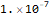
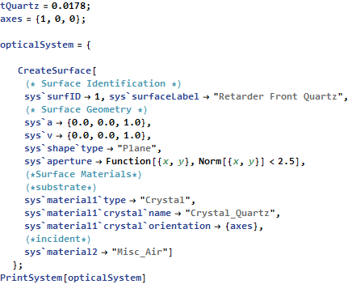
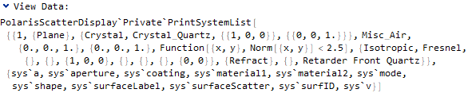
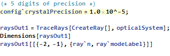
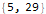
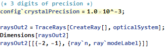

| CONFIG` SYMBOL |
config`crystalPrecision
| config`crystalPrecision A user modifiable configuration parameter of Polaris-M. It allows the user to set the precision of the index solve for crystal surface calculations. |

Data Type: Negative exponent of base 10
Default Value: 10^-7 (Denotes 7 digits of precision)

 Basic Examples (2)
Basic Examples (2)
Find out what happens when just config`crystalPrecision is entered:

The default value for the index precision of cyrstal surface calculations.

This example shows the change in precision of a crystal’s refractive index:







•  •
•  •
•  •
•  • •
• •  •
•  •
•  •
•  •
•  •
•  •
•  • • •
• • •  •
•  •
•  •
•  •
•